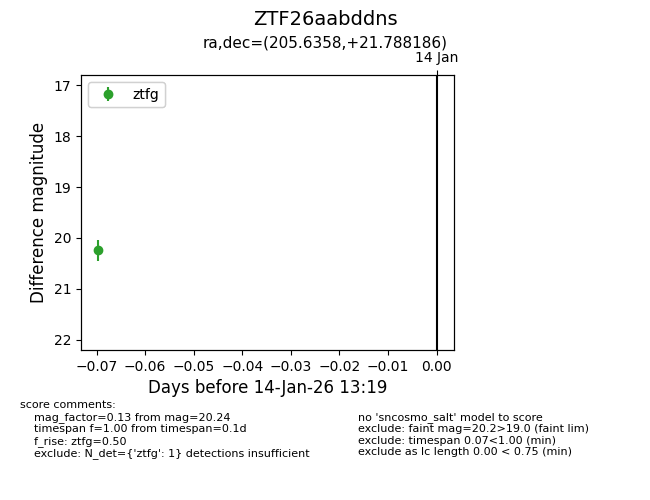
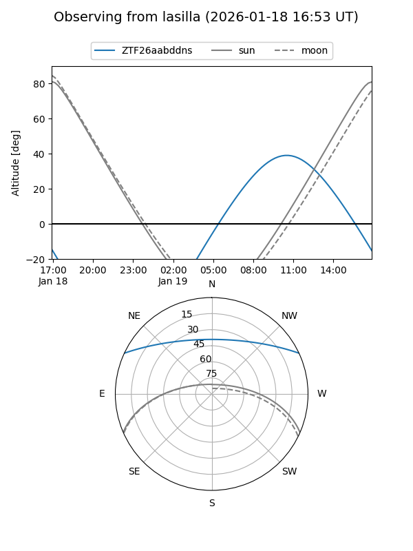
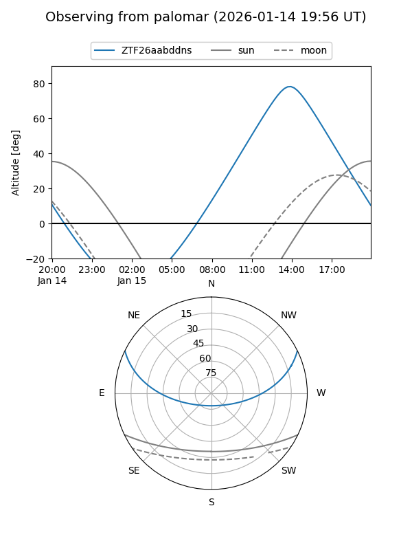
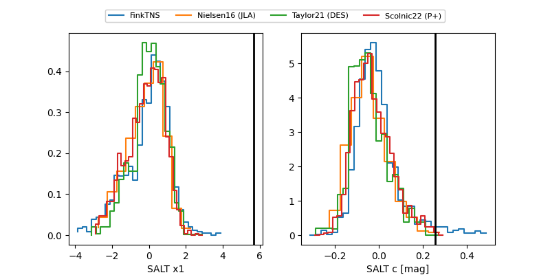

ZTF26aabddns
Target ZTF26aabddns at 2026-01-16 13:20
Aliases and brokers:
FINK: link
Lasair: link
ALeRCE: link
alt names
ZTF26aabddns (ztf,fink_ztf)
Coordinates:
equatorial (ra, dec) = 205.6358,+21.78819
equatorial (HMS+DMS) = 13:42:32.59,+21:47:17.47
galactic (l, b) = (11.0236,+77.21277)
Flags:
Photometry:
last ztfg=20.24, ztfr=19.91
1 ztfg, 1 ztfr detections
Lightcurve

Visibility


Additional plots
